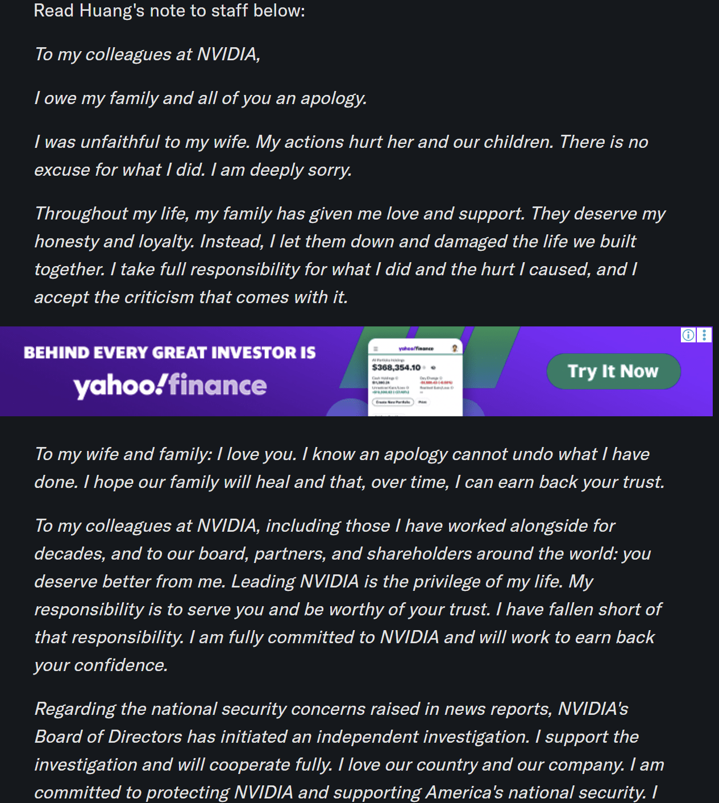

https://uk.finance.yahoo.com/news/nvidia-investigating-ceo-jensen-huang-202130170.html
회사 임직원 여러분께 드리는 말씀
저는 제 가족과 여러분 모두에게 사과드려야 할 책임이 있습니다.
저는 아내를 배신하고 외도를 저질렀습니다. 저의 행동은 아내와 자녀들에게 깊은 상처를 주었습니다. 제가 저지른 일에 대해서는 어떠한 변명의 여지도 없습니다. 진심으로 깊이 사죄드립니다.
제 평생 가족은 저에게 사랑과 지지를 보내주었습니다. 가족은 저로부터 정직함과 신의를 받을 자격이 있습니다. 그러나 저는 가족의 기대를 저버렸고, 우리가 함께 일구어 온 삶에 큰 상처를 남겼습니다. 저는 제가 저지른 행동과 그로 인해 발생한 모든 상처에 대해 전적으로 책임을 지겠습니다. 또한 그에 따른 모든 비판을 겸허히 받아들이겠습니다.
사랑하는 아내와 가족에게 말씀드립니다.
저는 여러분을 사랑합니다. 사과만으로 제가 저지른 잘못을 되돌릴 수 없다는 사실을 잘 알고 있습니다. 우리 가족이 상처를 치유하고, 시간이 걸리더라도 제가 여러분의 신뢰를 다시 얻을 수 있기를 간절히 바랍니다.
수십 년간 함께 일해 온 동료들을 비롯한 엔비디아(NVIDIA)의 모든 임직원 여러분, 그리고 이사회, 협력사 관계자 및 전 세계 주주 여러분께 말씀드립니다.
여러분은 저로부터 이보다 훨씬 더 나은 모습을 기대하실 자격이 있습니다.
엔비디아를 이끌어 온 것은 제 인생에서 가장 큰 영광이자 특권이었습니다. 저의 책임은 여러분을 위해 헌신하고, 여러분의 신뢰를 받을 자격이 있는 사람이 되는 것입니다. 그러나 저는 그 책임을 다하지 못했습니다.
저는 앞으로도 엔비디아에 전적으로 헌신할 것이며, 여러분의 신뢰를 회복하기 위해 최선을 다하겠습니다.
언론 보도에서 제기된 국가안보 관련 우려에 대해서도 말씀드리겠습니다.
엔비디아 이사회는 독립적인 조사를 개시했습니다. 저는 해당 조사를 전적으로 지지하며, 조사 과정에 성실하고 적극적으로 협조하겠습니다.
저는 우리나라와 우리 회사를 사랑합니다. 엔비디아를 보호하고 미국의 국가안보를 지키는 데 기여하기 위해 최선을 다하겠습니다.
저는 미국인이라는 사실에 자부심을 느끼며, 이에 깊이 감사하고 있습니다.
저의 가족은 제가 내린 선택에 대해 어떠한 책임도 없습니다. 그 책임은 오롯이 저에게 있습니다.
부디 제 가족의 사생활을 존중해 주시기를 간곡히 부탁드립니다
--
불륜했다고 실토하면서 사내 전체 공지로 수치플
하필 불륜 상대가 간첩이라서....
사내메일vs계집메일